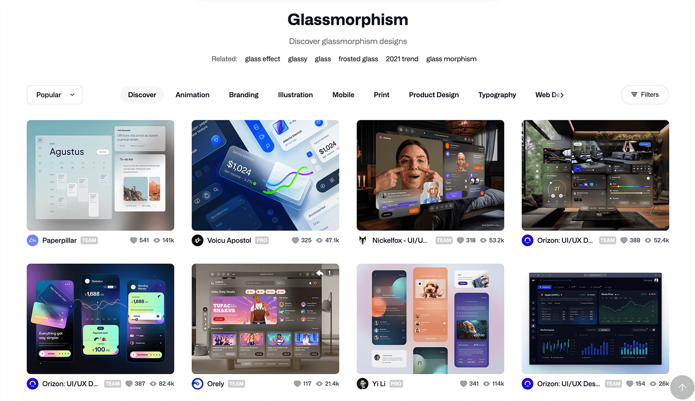
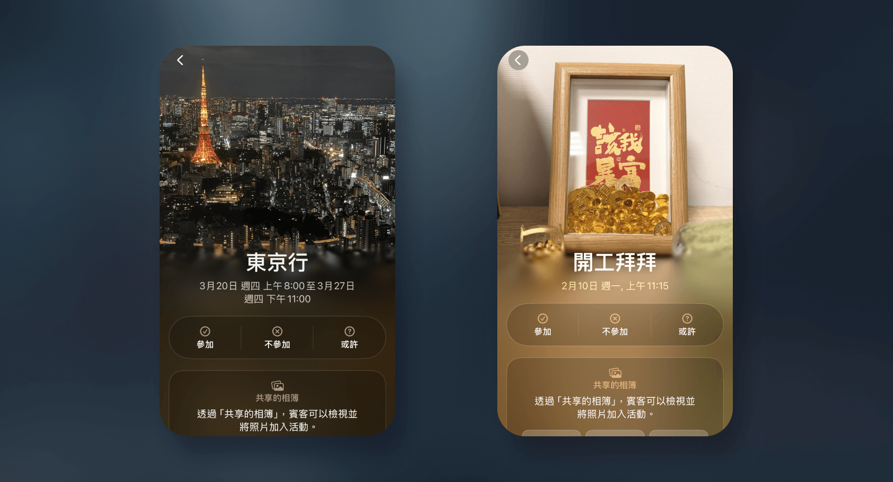

一. 滤镜 filter
filter属性能让你对 HTML 元素本身做一系列的图像处理效果，让我们能在不使用绘图软体的情况下实现各种特效，例如：模糊、明度、对比度等。
div {
filter: 方法(数值);
}
特效效果
而filter总共有以下几种效果可以使用：
演示： CSS 过滤器
blur：模糊
需要填写数值，单位可以是px、em、rem等。brightness：明度
调整亮度，需要填写百分比值：100%为原本的明度，往下是调暗，往上是调亮。contrast: 对比度
调整对比度，需要填写百分比值：100%为原本的对比度，往下是减低，往上是增加。grayscale：灰阶
转为灰阶，需要填写 0 到 1 之间的值，1 代表完全灰阶。hue-rotate：色相
调整色相环的位置，需要填写角度，单位可以是deg（度数）或turn（圈数）。invert：反转
转为相反的颜色，会变成对比色，需要填写 0 到 1 之间的值，1 代表完全相反。opacity：透明度
调整对比度，需要填写百分比值：100%为不透明，效果等同于：opacity: 數值;。sepia：棕褐色
转为怀旧的褐色调，需要填写 0 到 1 之间的值，1 代表完全褐色。saturate：饱和度
调整饱和度，需要填写百分比值：100%为原本的对比度，往下是减低，往上是增加。drop-shadow：阴影
在图片中非透明的周围加上阴影，这针对透明图片超好用！例如，如果单单为透明图片加上基本的阴影box-shadow，会像下方图片一样悲剧，阴影没有加在实际图案的周围，但用了filter的drop-shadow就能为实际图案的边缘加上阴影：
多重特效
你也可以使用多种特效在一个 HTML 元素上，只要简单使用空格隔开就好了，例如：
div {
filter: contrast(175%) brightness(105%);
}
二. 背景滤镜backdrop-filter
backdrop-filter可以对 HTML 元素后面的背景制作滤镜效果，影响的是背后的东西，而不是自己本身。最常见的是用来制作非常受欢迎的「毛玻璃效果 Glassmorphism 」，利用模糊区隔出背景，制造出透明感的景深效果，最常见被用在 iOS 系统中、弹跳视窗光箱（lightbox）或是导览列（Navbar）上等等。
在 Dribbble 上搜寻的 Glassmorphism 的话，会出现以下像这样酷炫的 UI，给大家参考：
基本语法
backdrop-filter语法的使用方式，基本上和filter一样：
div {
backdrop-filter: 方法(数值);
}
特效效果
backdrop-filter通常用在浮动的 HTML 元素上（如：绝对定位、固定定位、 sticky等等）。它可使用的效果和filter一样，请参考上面filter所列出来的所有效果。
只不过经我实测， opacity和drop-shadow不起作用，所以以下的 DEMO 范例没有它们：
演示： CSS 背景滤镜
刚刚说的「毛玻璃效果 Glassmorphism」就是使用其中的blur()效果。
多重特效
和filter一样，你也可以使用多种特效在一个 HTML 元素上，只要简单使用空格隔开就好了，例如：
.element {
backdrop-filter: blur(10px) brightness(60%);
}
上面的例子会将元素后面的背景模糊处理，并且使其稍微变暗（亮度调低至 60%）。这样可以做出类似黑色毛玻璃效果。
三、渐进式模糊（Progressive blur）
会用backdrop-filter后，搭配昨天我们学到的 CSS mask语法，我们还可以进一步制作渐进式模糊。
什么是渐进式模糊呢？渐进式模糊（Progressive blur）就是 UI 中照片下半部会逐渐模糊，然后下方显示其他文字资讯等。
这种背景模糊的 UI，在 Apple 的 iOS UI 中很常出现这种效果（例如： Apple Invites ），过去在网页上很难做到，但是现在只要灵活运用这两个语法就能做到啰！
演示
这边我们在有背景图的div上，新增一个满版的伪元素::before并且设定背景滤镜backdrop-filter ，然后再透过 CSS mask线性渐层调整模糊的范围，就可以做到啦！
.photo {
position: relative;
overflow: hidden;
background-image: url("image.jpg");
background-size: cover;
overflow: hidden;
&::before {
content: "";
display: block;
position: absolute;
top: 0;
left: 0;
right: 0;
bottom: 0;
backdrop-filter: blur(10px);
mask: linear-gradient(180deg, transparent 350px, #000 450px);
}
}
DEMO 连接： CSS 渐进式模糊
四、固定定位（fixed）+ filter/backdrop-filter 的陷阱
如果 fixed 项目的父层上有filter或backdrop-filter属性，该 fixed 项目就不会依据「浏览器的视窗大小」进行定位，而是依据「该 HTML 的父层」定位。
做个实例给大家参考看看：
解法： 改变 filter 的元素，或是改使用 sticky 做到类似效果。
延伸阅读：